Startseite
Mercedes-Benz Pkw GALERIE
Großer Mercedes / Maybach
Großer Mercedes / Maybach
Baureihe
186
189
100
240
222
223
Öffne alles
Alle schließen
Ja
En
Limousine/Kombi
A-klasse
B-klasse
C-klasse
E-klasse
S-klasse
Großer/Maybach
Coupé/Roadster
CLA
C-coupé
CLK
E-coupé/CLE
CLS
S-coupé
SLK/SLC
SL
SLR/SLS/AMG-GT
SUV/Geländewagen
GLA
GLB
GLK/GLC
R-klasse
ML/GLE
GL/GLS
G-klasse
Minivan/Pickup
T-klasse/Vaneo/Citan
V-klasse/Viano/Vito
X-klasse
Großer
Typ 300 Adenauer
W186
Typ 300 II , 300b III , 300c (IV)
12/1951 - 08/1957
Designer : Friedrich Geiger
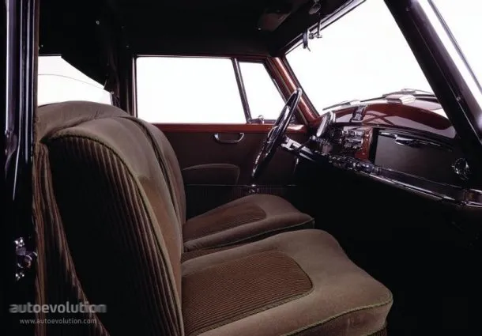
Landaulet
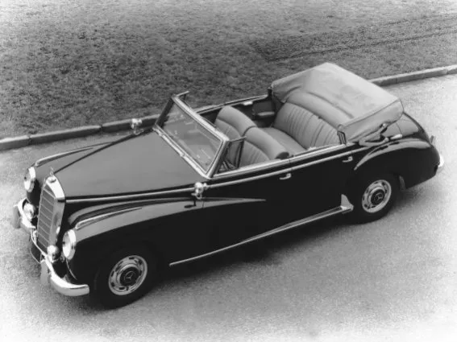
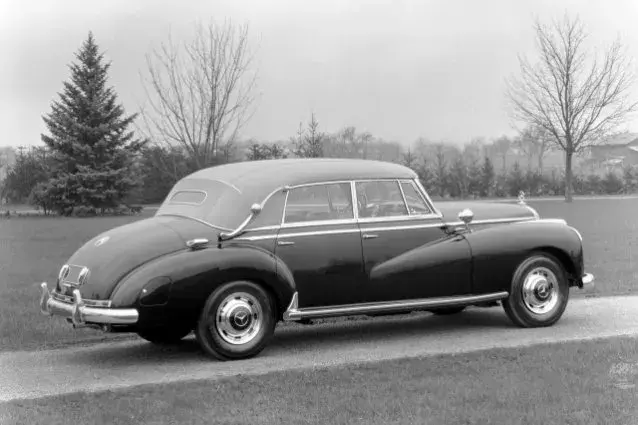
Abmessungen
Typ 300 d
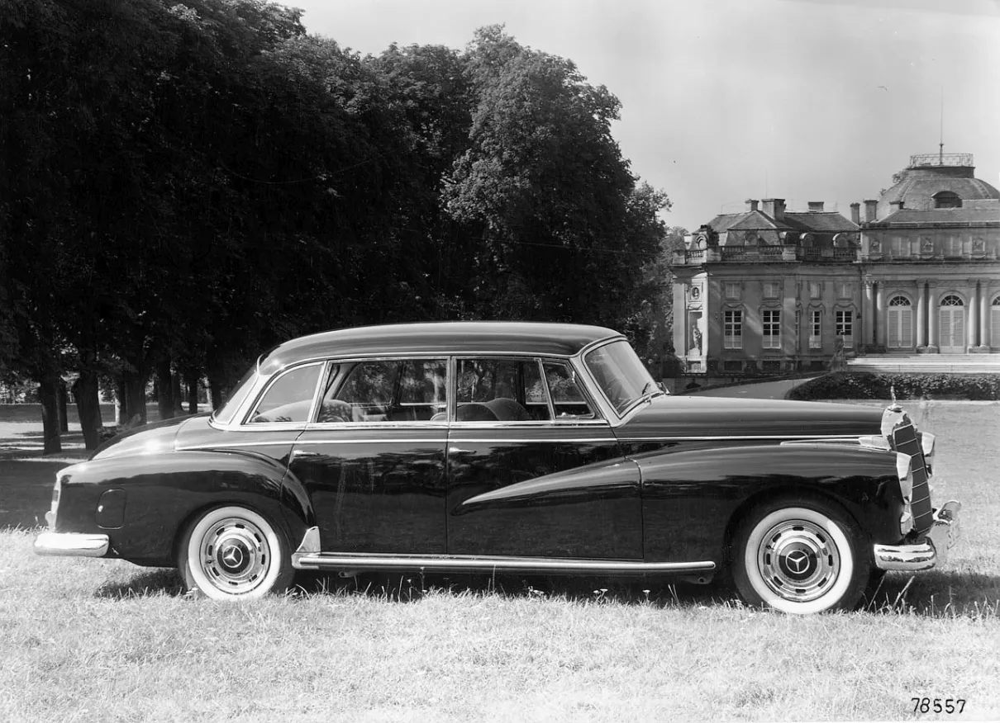
W189
Typ300d
11/1957 - 03/1962
Designer : Friedrich Geiger
Abmessungen
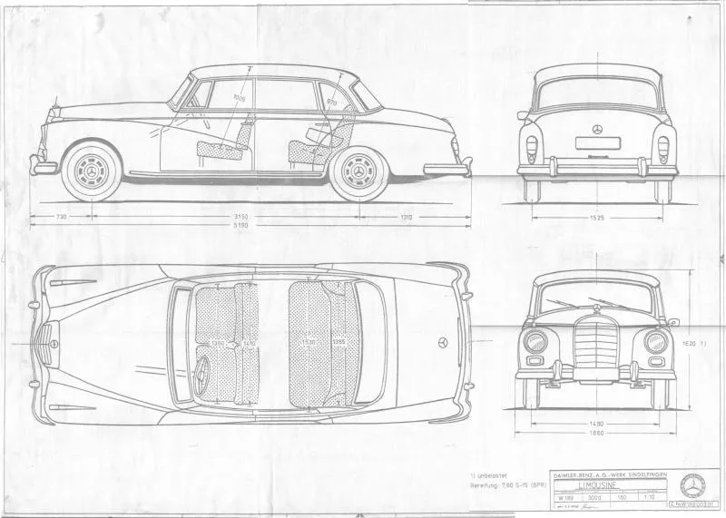
Landaulet
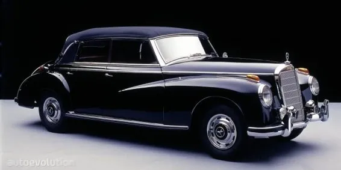
Andere
Typ 600 Großer
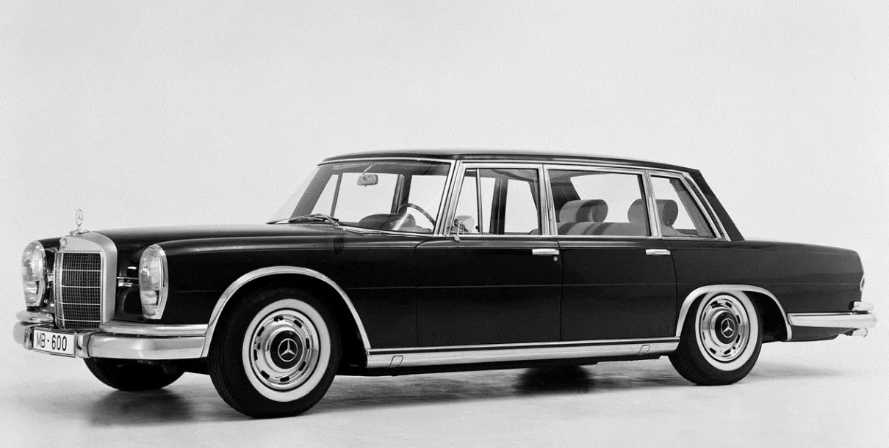
W100
Typ600
1963 - 1981
Designer : Paul Bracq , Bruno Sacco , Friedrich Geiger
Von links
Pullman-Limousine,
Limousine,
und W110.
Pullman-Limousine
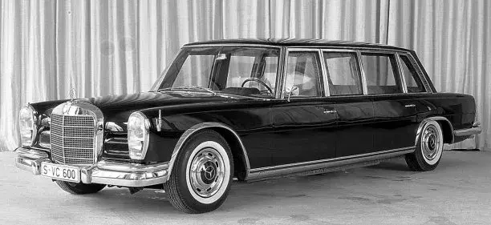
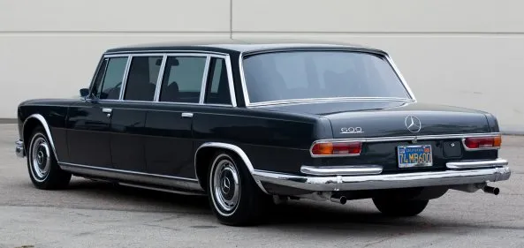
Abmessungen
Landaulet
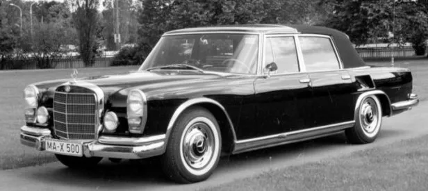
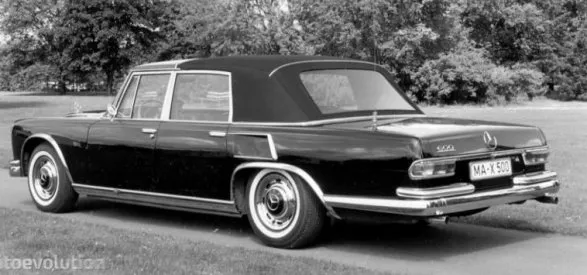
Pullman-Landaulet
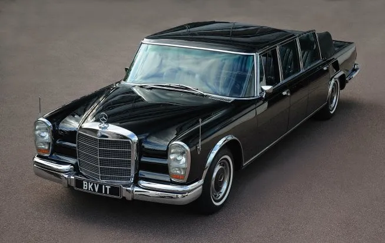
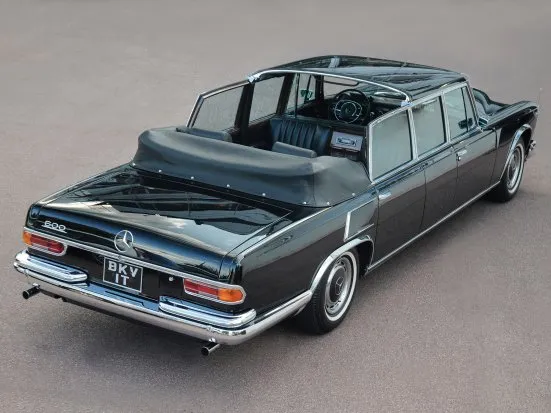
Coupé
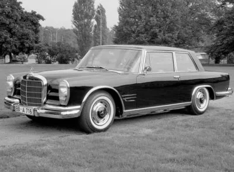
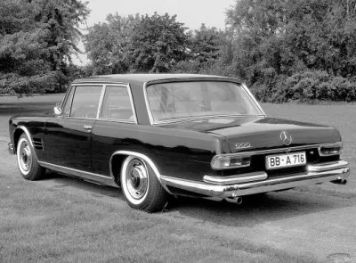
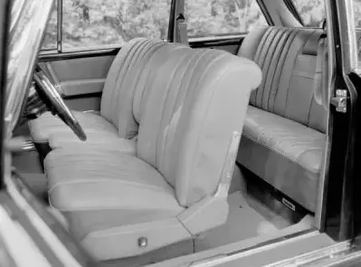
Maybach
W240
57 , 62
06/2002 - 12/2012
Designer : Michael Fink , Peter Pfeiffer
57
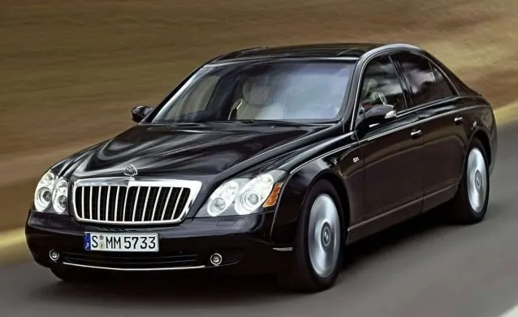
62
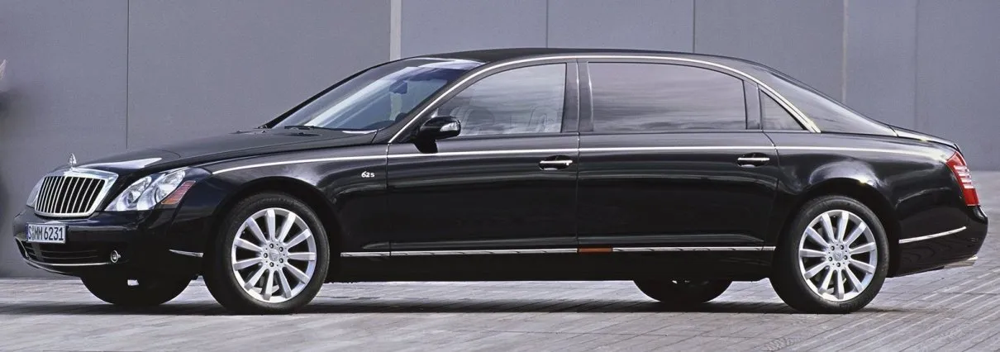
Landaulet 2008 - 2013
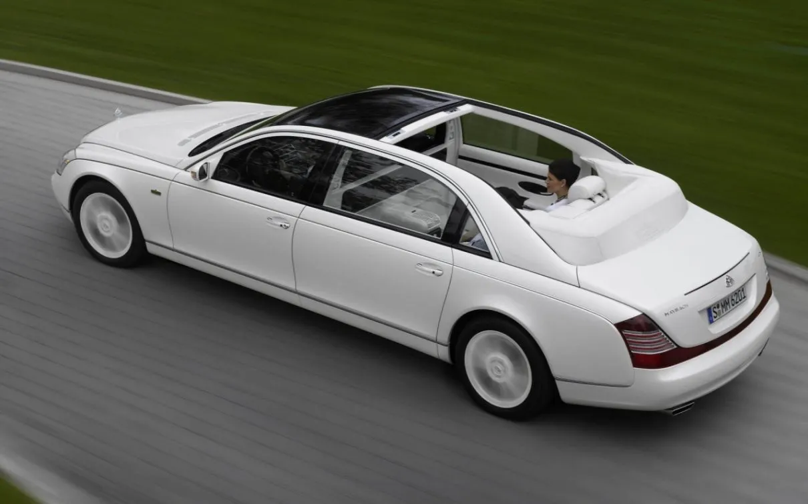
Mercedes Maybach I
X222
Mercedes Maybach
2014 - 2020
Designer : Filip Nagi , Robert Lešnik (Exterieur) , Kyohee Lee (Innere) , Gorden Wagener
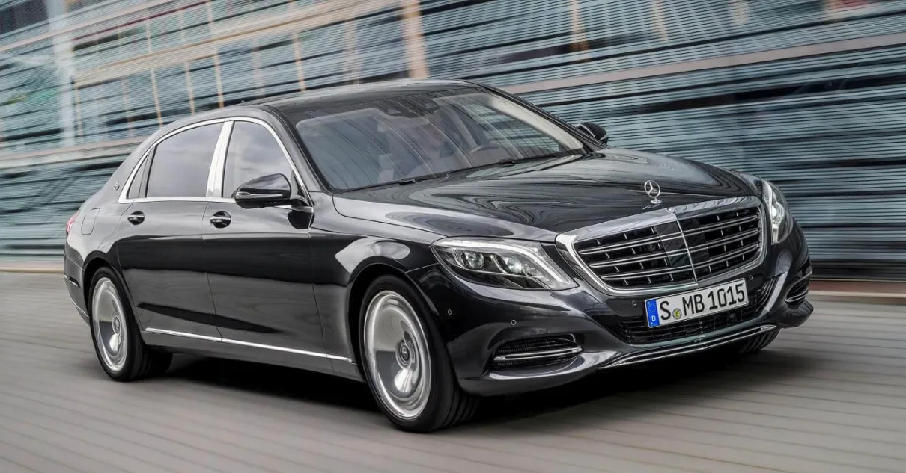
Abmessungen
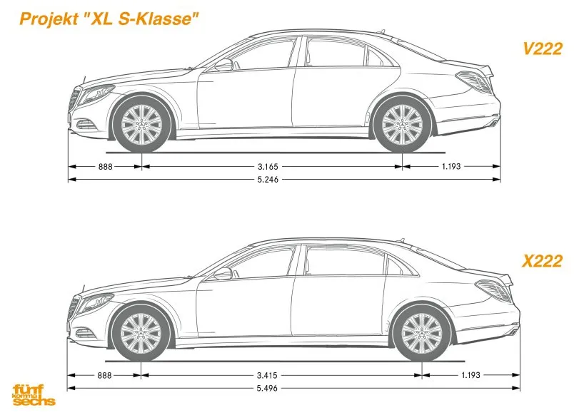
VV222
Maybach Pullman 2016-
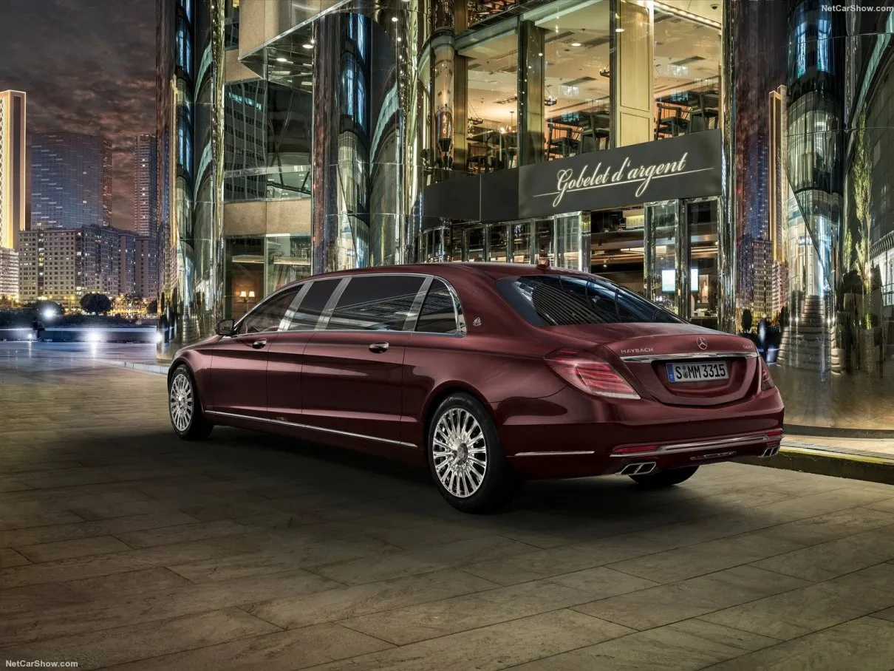
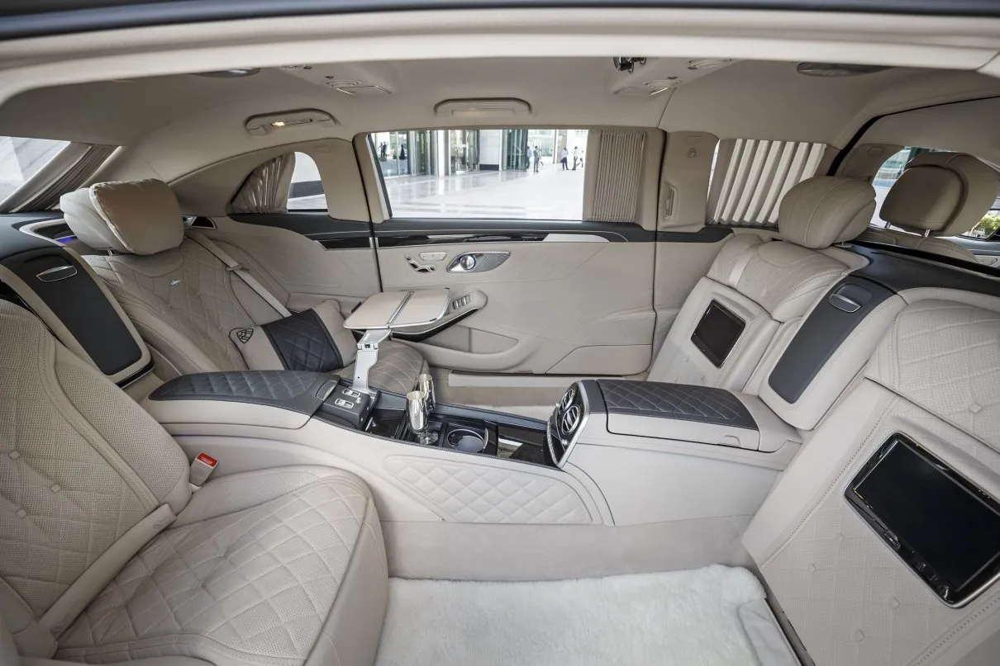
Mercedes Maybach II
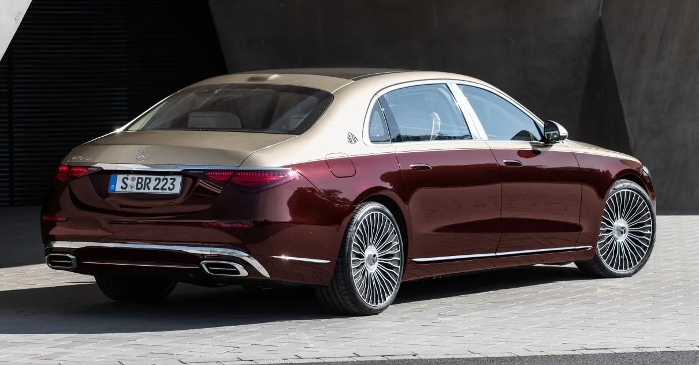
Z223
Mercedes Maybach
11/2020-
Designer : Balázs Filczer , Gorden Wagener
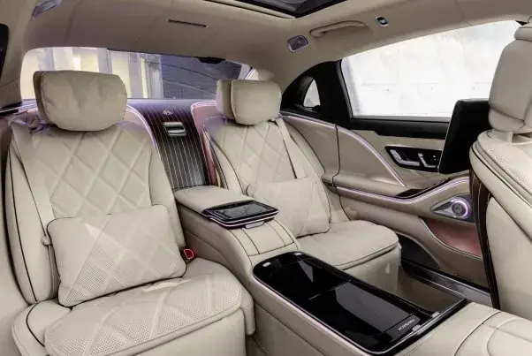
▲
▶


{kind=link}
{kind=link}
{kind=link}
{kind=link}
{kind=link}
{kind=link}
{kind=link}
{kind=link}
{kind=link}
{kind=link}
{kind=link}
{kind=link}
{kind=link}
{kind=link}
{kind=link}
{kind=link}
{kind=link}
{kind=link}
{kind=link}
{kind=link}
{kind=link}
{kind=link}
{kind=link}
{kind=link}
{kind=link}
{kind=link}